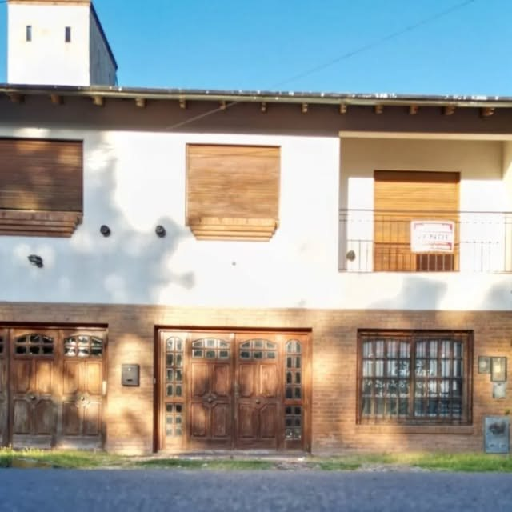
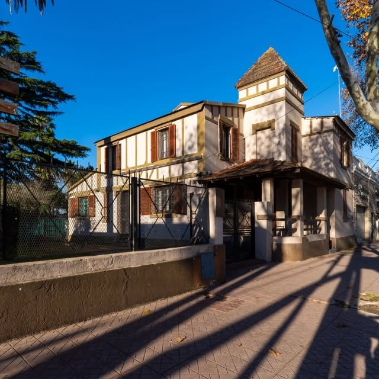
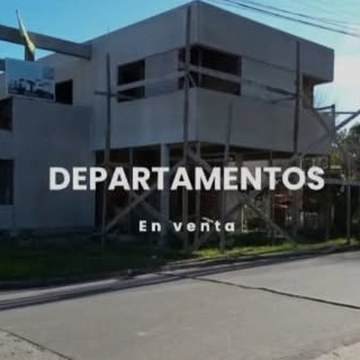

Información clara para comprar, vender o alquilar tranquilo.
Te acompaño en cada paso de la operación, desde la primera consulta hasta la firma.
Estudiante de Martillero y Corredor Público en la Universidad del Este.
Una carpeta para cada operación
Comprar, vender, alquilar, tasar o rematar: cada caso tiene sus pasos y sus papeles. Elegí el tuyo.
Vender tu propiedad
Te ayudo a ponerle un precio realista, a tener los papeles en orden antes de publicar y a encontrar a quien la compre, acompañándote en cada visita y en la negociación.
Consultar para vender- Un precio que tenga sentidoComparando con propiedades parecidas de la zona y mirando el estado real de la tuya.
- Los papeles antes de publicarEscritura, planos, impuestos y servicios: mejor saber hoy si falta algo.
- Difusión y visitasPublicación en mis redes y visitas coordinadas con vos.
- Negociación hasta la firmaJunto con el escribano que intervenga en la operación.
Comprar con los papeles en orden
Encontrar la casa es la parte linda. Antes de señar, revisamos juntos que la documentación esté en regla para que decidas con tranquilidad.
¿Qué papeles hay que mirar? Lo explico en esta nota del blog.
Consultar para comprar- Búsqueda según lo que necesitásZona, ambientes, presupuesto y lo que no negociás.
- Visitas acompañadasPara mirar lo que en una foto no se ve.
- Revisión de la documentaciónTitular, informe de dominio, inhibiciones y deudas, con los profesionales que correspondan.
- Consultas antes de entregar dineroNinguna duda queda para después de firmar.
Alquilar, de un lado o del otro
Si buscás dónde vivir o querés poner tu propiedad en alquiler, te ayudo a que las condiciones queden claras por escrito desde el primer día.
Consultar para alquilar- Para quien buscaOpciones según zona y presupuesto, y los requisitos claros de entrada.
- Para quien alquila su propiedadDifusión, visitas y evaluación de los interesados.
- Condiciones por escritoPlazos, actualizaciones y garantías, conversadas antes de firmar.
Saber cuánto vale
La tasación es una estimación fundada del valor de mercado: se mira la ubicación, el terreno, la construcción, los papeles y lo que pasa en la zona.
Las tasaciones formales, por ejemplo para una sucesión o un banco, las firma un martillero matriculado. Cómo se tasa una propiedad.
Consultar para tasar- Comparación con la zonaPropiedades parecidas, publicadas y vendidas.
- Estado y superficie realLo construido, lo declarado y lo que hay que arreglar.
- Un número con argumentosPara publicar bien desde el principio y no tener que retasar.
Remates y subastas
El remate público es la tarea que le da nombre a la profesión: vender un bien al mejor postor, con reglas claras y a la vista de todos.
Estoy terminando la carrera de Martillero y Corredor Público: los remates los voy a poder hacer con la matrícula. Si tenés uno en mente, escribime y te oriento.
Consultar para rematar- Bienes muebles e inmueblesDesde una propiedad hasta maquinaria o rodados.
- Cómo se preparaQué documentación hace falta y cómo se difunde.
- Si conviene en tu casoA veces una venta tradicional es mejor opción.
Del estudio a la acción.
Nunca dejes de aprender y crecer.
Soy Angel Calapeña. Me estoy formando como Martillero y Corredor Público y creo que la información clara es fundamental para quienes desean comprar, vender, alquilar o invertir en una propiedad.
Por eso escribo un blog: para explicar los temas inmobiliarios de manera sencilla y ayudar a que cada persona tome decisiones más seguras sobre su patrimonio.
Cómo trabajo
Siempre en el mismo orden, para que sepas en qué punto está tu operación.
- 1
Me contás qué necesitás
Por WhatsApp, Instagram o con el formulario de esta página.
- 2
Miramos la propiedad y los papeles
Una visita y una revisión de la documentación antes de dar cualquier paso.
- 3
Armamos el plan
El precio, la búsqueda o la publicación, según lo que estés por hacer.
- 4
Te acompaño hasta la firma
Visitas, negociación y coordinación con el escribano.
Propiedades
Pronto vas a ver acá las propiedades
Cada una con sus fotos, su ubicación y todos los datos. Si tenés una propiedad para vender o alquilar, puede ser de las primeras.
Quiero publicar la míaMientras tanto, algunas publicaciones en Instagram



Del blog
Información y consejos inmobiliarios, explicados de manera clara y sencilla.
¿Qué documentación hay que revisar antes de comprar una propiedad?
Una guía sencilla para conocer los principales documentos que conviene revisar antes de dar un paso tan importante como comprar una casa o un departamento.
¿Qué hace un martillero y corredor público y cuándo conviene consultar a uno?
Mucha gente asocia la palabra martillero solo con los remates. La profesión abarca bastante más: acá te cuento qué hace, qué no hace y en qué momentos te conviene tener uno al lado.
Cómo se tasa una propiedad: qué mira el tasador
El precio de publicación, el valor de mercado y el precio al que finalmente se vende no siempre coinciden. Estos son los factores que se analizan para llegar a un valor realista.
Contame qué necesitás
Completá lo que sepas y te armo el mensaje. Lo mandás por WhatsApp o por Instagram, como te quede más cómodo.
Preguntas frecuentes
Si tu duda no está acá, escribime.
¿Ya estás matriculado?
Todavía no. Estoy terminando la carrera de Martillero y Corredor Público en la Universidad del Este. Mientras tanto asesoro en compra, venta y alquiler, y prefiero decirlo de entrada para que sepas con quién hablás.
¿Qué hace un martillero y corredor público?
Intermedia en la compra, venta y alquiler de inmuebles, orienta sobre el valor de las propiedades y es el profesional que puede hacer remates públicos. Lo explico con más detalle en esta nota del blog.
¿En qué zonas trabajás?
En San Vicente y alrededores. Si tu propiedad está en otra zona, escribime igual y lo vemos.
¿Cuánto cobrás?
Depende del tipo de operación. Los honorarios de martilleros y corredores los regula la ley de cada provincia. Te los explico antes de empezar, para que no haya sorpresas.
¿Qué papeles necesito para vender?
En general, la escritura, los planos y las boletas de impuestos y servicios, entre otros. Cada caso tiene lo suyo, así que conviene revisarlo antes de publicar. En el blog hay una guía sobre la documentación que mira un comprador.
¿Cómo te hago una consulta?
Con el formulario de esta página, que te arma el mensaje, o directamente por WhatsApp, Instagram o por mail a info.angelcalapena@gmail.com.